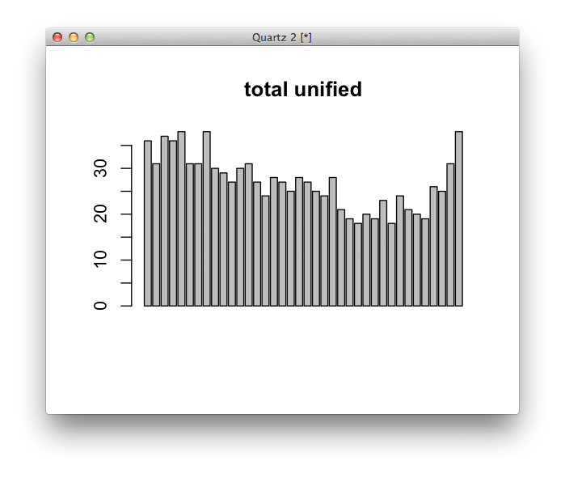

As of January, more than two-thirds of states will be under single-party control. In this exercise, we'll visualize the history of single-party statehouses and get more experience with charting and chart forms.
We'd like to explore more than just the recent numbers behind single-party control of statehouses, so we got data from the NCSL for these totals going back 50 years. Download their data and save it to your data folder as states-data.tsv
Next, load the data. Any format is fine, but our data is a tab-delimited .tsv files, so we can use read.delim.
data <- read.delim("data/states-data.tsv")
Inspect the data the same way we did last time. What do the field names mean?
Make a new field in your data frame that is the sum of unified states:
data$total.unified <- data$Unified.D+data$Unified.R
Now our data is ready to chart. It’s just one line of code to make a plot of the number of unified states over time, with “Year” on the x axis and “total.unified” on the Y axis:
plot(data$Year,data$total.unified,type='l',ylim=c(0,50))

The same plot, with extra arguments to clean it up a little:
plot(data$Year,data$total.unified,type='l',ylim=c(0,50),xlab="Year",ylab="States",main="States with unified control of state government since 1938",col="red",lwd=3)
abline(h=c(0,10,20,30,40,50),col='lightgrey')
abline(v=c(1940,1960,1980,2000),col='lightgrey')

Adding more layers onto the plot, drawing lines for Democratic- and Republican- unified states. (In general, “plot” makes a chart and “lines” add to an existing plot.)
plot(data$Year,data$total.unified,type='l',ylim=c(0,50))
lines(data$Year,data$Unified.R,col="red")
lines(data$Year,data$Unified.D,col="blue")

Now we’ll make a barplot instead.
barplot(data$total.unified,main="total unified")

Now let's do a more complicated one. The syntax here is a little weird. Basically, our data needs to be transposed and reduced to just the columns we want to plot. You can do this in one step, but for clarity I’ll break it up here. It looks like a waffle chart just because of the horizontal axis lines, but it’s just a barplot.
#just the numbers we want to plot
data.we.need<-data[,c("Unified.D","Divided","Unified.R")]
#a simple reshaping, transposing our data
transposed<-t(data.we.need)
barplot(transposed,ylim=c(0,50),col=c('blue','grey','red'),border=F)
abline(h=c(1:50),col='white')

We end up doing the same plot for the final output; it’s just shaped differently and has fewer axis lines. We’re also saving it as a pdf in the dimensions we want:
pdf(file="stacked-bars.pdf",width=8,height=5)
barplot(transposed,ylim=c(0,50),col=c('blue','grey','red'))
abline(h=c(10,20,30,40),col='white')
dev.off()

Here's how it looked in print:

Getting good at plotting is simply a function of practice. But even if you're not interested in charting, R is exceptionally useful for data crunching and analysis, which we'll see in the next exercise, Analyzing Where Chicago's Guns Came From